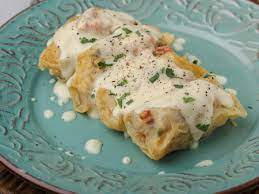

A cabbage roll is a dish consisting of cooked cabbage leaves wrapped around a variety of fillings. It is common to the cuisines of Central, Northern, Eastern and Southeastern Europe and much of Western Asia, Northern China, as well as parts of North Africa. Meat fillings are traditional in Europe, and include beef, lamb, or pork seasoned with garlic, onion, and spices. Grains such as rice and barley, mushrooms, and vegetables are often included as well. Fermented cabbage leaves are used for wrapping, particularly in southeastern Europe. In Asia, seafoods, tofu, and shiitake mushrooms may also be used. Chinese cabbage is often used as a wrapping. For more information on the lachanolmades have a look here.